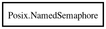

Posix.NamedSemaphore – posix Reference Manual
NamedSemaphore
Object Hierarchy:

Description:
[
Compact
]
[
CCode
( cname =
"sem_t"
, copy_function =
""
, cprefix =
"SEM_"
, free_function =
"sem_close"
, has_type_id =
false
, lower_case_cprefix =
"sem_"
) ]
public
class
NamedSemaphore
Namespace:
Posix
Package:
posix
Content:
Constants:
public
const
int
FAILED
Static methods:
public
static
int
unlink
(
string
name)
Creation methods:
public
NamedSemaphore
(
string
name,
int
oflag =
0
,
mode_t
mode =
0
,
uint
val =
0
)
Methods:
public
int
getvalue
(
out
int
sval)
public
int
post
()
public
int
timedwait
(
timespec
abs_timeout)
public
int
trywait
()
public
int
wait
()